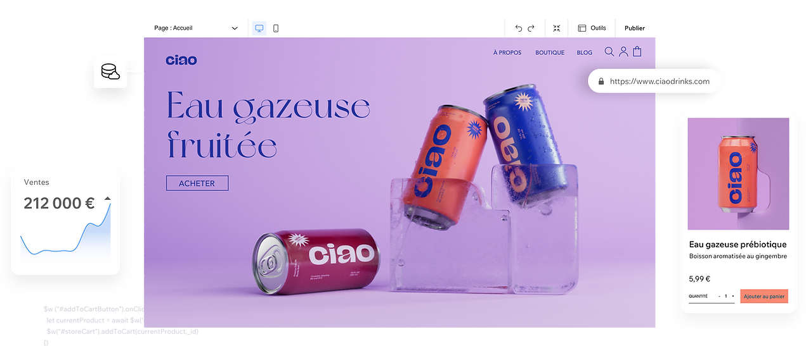

Créez un site internet professionnel pour promouvoir votre entreprise et exposer votre travail en ligne. Lancez votre boutique en ligne ou votre blog - avec Wix, les possibilités sont infinies.
Commencer ➔Agissons ensemble pour soutenir le peuple ukrainien.Montrez votre soutien ➔
Découvrez une plateforme qui vous donne la liberté de créer, gérer et développer votre présence sur le Web.
Essayez Wix. Aucune carte bancaire requise.
Créez un site internet professionnel pour promouvoir votre entreprise et exposer votre travail en ligne. Lancez votre boutique en ligne ou votre blog - avec Wix, les possibilités sont infinies.
Commencer ➔Suivez ces étapes pour créer votre site Web :
Choisissez un template et personnalisez-le, ou obtenez un site sur-mesure en répondant à quelques questions sur vous et votre activité
Lancez votre blog, ouvrez une boutique en ligne et acceptez des réservations en ligne. Ajoutez des fonctionnalités à votre guise.
Optimisez l'affichage de votre site sur tous les écrans et modifiez-le directement depuis l'Éditeur mobile.
Profitez de notre suite d'outils avancés pour optimiser votre trafic organique et votre visibilité sur les moteurs de recherche.
Choisissez parmi des centaines de templates de sites Web,
conçus spécialement pour répondre à tous vos besoins.
Wix est la plateforme de création de sites Web la plus innovante au monde. Démarrez de zéro ou choisissez parmi plus de 800 templates conçus par des designers pour créer votre site internet. Tout est personnalisable. Donnez vie à votre site avec des arrière-plans vidéo, des effets de défilement et des animations. Grâce à l'Éditeur Wix, vous pouvez créer un site internet à la fois beau et professionnel.
Créer un site ➔Répondez à quelques questions simples et Wix ADI (Artificial Design Intelligence) créera instantanément un site Web personnalisé pour vous, incluant du texte et des images adaptés. Choisissez votre style, modifiez le design et ajoutez les fonctionnalités dont vous avez besoin pour votre entreprise, comme une boutique en ligne ou un système de réservation. Lorsque vous êtes prêt, publiez votre site sur Internet en un clic.
Commencer ➔Créez facilement des applications Web professionnelles avec architecture serverless et du code JavaScript. Gérez tout votre contenu à partir de bases de données intégrées, choisissez d'utiliser votre propre IDE ou travaillez avec l'IDE de Velo et connectez des centaines d'API ou vos API et Systèmes existants. Vous bénéficiez en outre d'une liberté totale de design via notre Éditeur Wix et ses applis optimisées pour les entreprises.
Commencer ➔Obtenez des fonctionnalités professionnelles à utiliser sur votre site
Développez votre entreprise en ligne avec une plateforme d'eCommerce puissante.
Permettez à vos clients de fixer des rendez-vous et de payer en ligne.
Créez un blog unique et design avec
des fonctionnalités intégrées afin de développer votre communauté et de partager toutes vos idées.
Créez votre propre logo professionnel et renforcez votre image de marque en ligne.
Obtenez un nom de domaine personnalisé assorti à votre activité et à votre marque.
Gagnez en visibilité sur les moteurs de recherche grâce à des outils et fonctionnalités SEO ultra-performants.
Découvrez les dernières tendances, approfondissez vos connaissances et trouvez des sources d'inspiration en lisant les articles du blog de Wix.
Decouvrir le blog ➔Ce site à été créé par Steeven